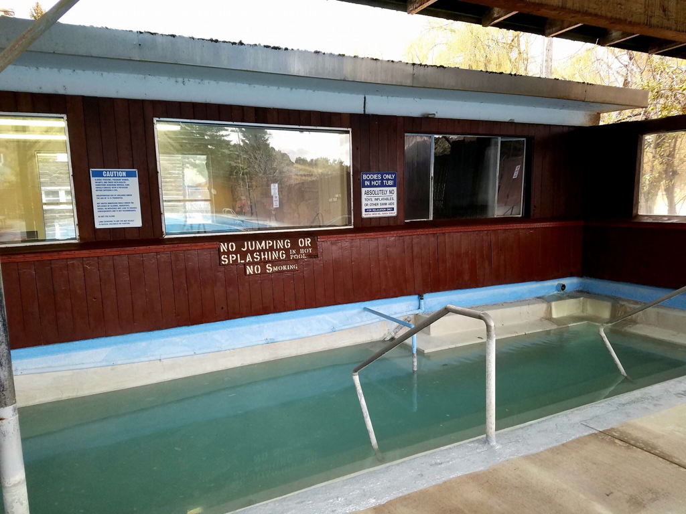

The Tetons
Soaring over a landscape rich with wildlife, pristine lakes, and majestic alpine vistas, the Teton Range stands as a testament to generations of stewards. For over 11,000 years, communities have thrived in the valley known as Jackson Hole, turning these mountains into more than just peaks—they embody imagination and enduring human connection.
Location: Wyoming, Grand Teton National Park
Website: https://www.nps.gov/grte/index.htm
Number: +13077393399

St. Anthony Sand Dunes
The St. Anthony Sand Dunes consists of 10,600 acres of clear, shifting, white quartz sand. Although much of the sand dunes is managed as a wilderness study area, the area is popular for high off-road vehicle use. Dunes up to 400 feet high attract riders from throughout the west. ORV users are strongly encouraged to avoid damage to vegetation and impacts to wildlife so that use of this unique area may continue. Others prefer to explore the dunes on horse and on foot.
Location: St Anthony, ID 83445
Website: https://www.blm.gov/visit/st-anthony-sand-dunes
Number: +12085247500

Ropes Course at BYU-Idaho
The Ropes Course contains three levels, each more challenging than the previous level. The bottom level has moderate challenges and the top level is the most difficult. Participants are connected to the course with a continuous belay system to explore the course. Find fantastic individual and group challenge activities for your friends and FHE groups. Note: Limited to 60 participants per two-hour period.
Location: W 7th S &, S Center St, Rexburg, ID 83440
Website: https://www.byui.edu/ropes-course
Number: +12084963120

Heise Hot Springs
Heise Hot Springs has a natural mineral hot spring kept at a temperature of about 104 degrees Fahrenheit. It is perfect for soaking those sore muscles and joints, sitting and relaxing, or just warming up from the cold during the winter! we also have a warm pool, which is fresh water and kept at about 96 degrees. Its temperature and shallow depths make this pool ideal for kids and families.
Location: 5116 E Heise Rd, Ririe, ID 83443
Website: https://www.heiseresort.com/
Number: +12085387312